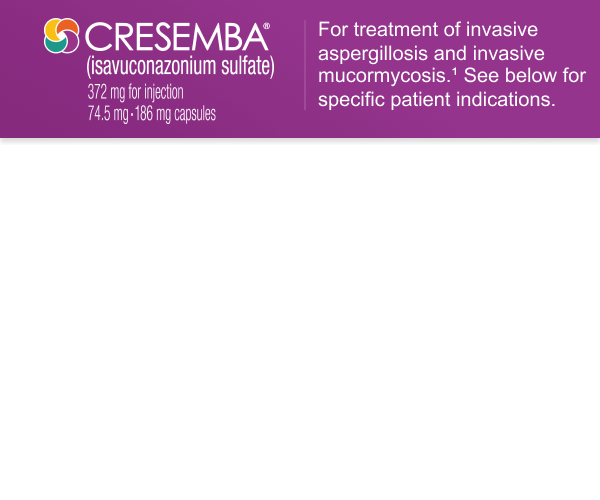
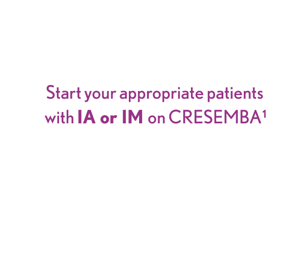

Hepatic Adverse Drug Reactions (e.g., elevations in ALT, AST, alkaline phosphatase, total bilirubin) have been reported in clinical trials and were generally reversible and did not require discontinuation of CRESEMBA. Cases of severe hepatic adverse drug reactions including hepatitis, cholestasis or hepatic failure including death have been reported in patients with serious underlying medical conditions (e.g., hematologic malignancy) during treatment with azole antifungal agents, including CRESEMBA. Evaluate liver tests at the start and during therapy. Monitor patients who develop liver abnormalities during CRESEMBA therapy for severe hepatic injury. Discontinue if clinical signs and symptoms consistent with liver disease develop that may be attributable to CRESEMBA.
Infusion-Related Reactions including hypotension, dyspnea, chills, dizziness, paresthesia, and hypoesthesia were reported during intravenous administration of CRESEMBA. Discontinue the infusion if these reactions occur.
Hypersensitivity Reactions: Anaphylactic reactions, with fatal outcome, have been reported during treatment with CRESEMBA. Serious skin reactions, such as Stevens Johnson syndrome, have been reported during treatment with other azole antifungal agents. Discontinue CRESEMBA if anaphylactic or serious skin reactions occur, and initiate supportive treatment as needed.
Embryo-Fetal Toxicity: During pregnancy, CRESEMBA may cause fetal harm when administered, and CRESEMBA should only be used if the potential benefit to the patient outweighs the risk to the fetus. Women who become pregnant while receiving CRESEMBA are encouraged to contact their physician.
Drug Interactions: Coadministration of CRESEMBA with strong CYP3A4 inhibitors such as ketoconazole or high-dose ritonavir and strong CYP3A4 inducers such as rifampin, carbamazepine, St. John’s wort, or long acting barbiturates is contraindicated.
Drug Particulates: Following dilution, CRESEMBA intravenous formulation may form precipitate from the insoluble isavuconazole. Administer CRESEMBA through an in-line filter.
In adult patients, the most frequently reported adverse reactions among CRESEMBA-treated patients were nausea (26%), vomiting (25%), diarrhea (22%), headache (17%), elevated liver chemistry tests (16%), hypokalemia (14%), constipation (13%), dyspnea (12%), cough (12%), peripheral edema (11%), and back pain (10%).
In adult patients, the adverse reactions which most often led to permanent discontinuation of CRESEMBA therapy during the clinical trials were confusional state (0.7%), acute renal failure (0.7%), increased blood bilirubin (0.5%), convulsion (0.5%), dyspnea (0.5%), epilepsy (0.5%), respiratory failure (0.5%), and vomiting (0.5%).
In pediatric patients, the most frequently reported adverse reactions were diarrhea (26%), abdominal pain (23%), vomiting (21%), elevated liver chemistry tests (18%), rash (14%), nausea (13%), pruritus (13%), and headache (12%).
In general, adverse reactions in pediatric patients (including serious adverse reactions and adverse reactions leading to permanent discontinuation of CRESEMBA) were similar to those reported in adults.
CRESEMBA (isavuconazonium sulfate) is an azole antifungal indicated for the treatment of invasive aspergillosis and invasive mucormycosis as follows:
Specimens for fungal culture and other relevant laboratory studies (including histopathology) to isolate and identify causative organism(s) should be obtained prior to initiating antifungal therapy. Therapy may be instituted before the results of the cultures and other laboratory studies are known. However, once these results become available, antifungal therapy should be adjusted accordingly.
All trademarks are the property of their respective owners.
©
2025 Astellas Pharma Inc. or its affiliates.
MAT-US-CRE-2025-00157 12/25